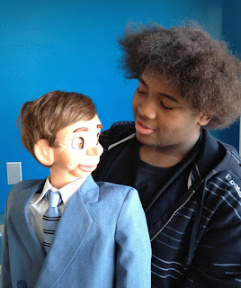

Student debut
2/9/2012
From George Boosey
My brother Fred Boosey is a drama teacher at an arts magnet high school in Little Rock and has been honored as teacher of the year and even won some international honors of his drama teaching. For years, he has had a mime troupe, which has performed not only all over Arkansas but around the country.
In recent years, he has expanded his student troupe to include unicycle riders and ball walkers and other variety arts so it seemed to me that it was a natural to move next into ventriloquism. I gave him a Clinton Detweiler figure, which I had purchased from Dan Willinger to be a backup to my main cheeky boy character, Oscar. Oscar, as both of you know, is a Marshall figure originally carved for our friend, Peter Rich.
I also gave Fred the Maher Course booklets from the 1980s and a few other books on ventriloquism and script writing and he found a student who was interested in the art and who will make his debut in the high school production of Annie, playing a ventriloquist on the radio.
 |
| Introducing Jamison Grandy, a new young ventriloquist and student at Little Rock’s Parkview High School. |
{kind=link}